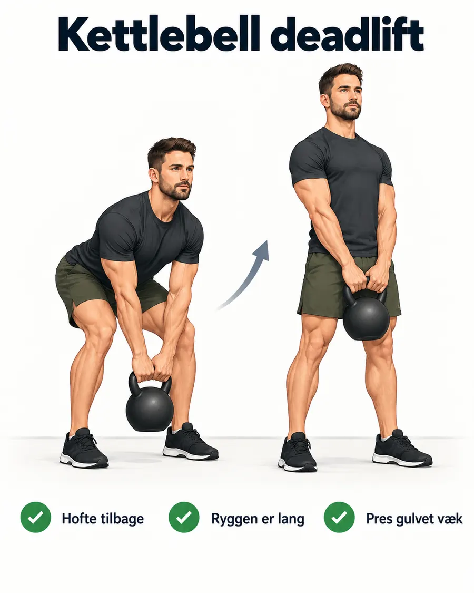
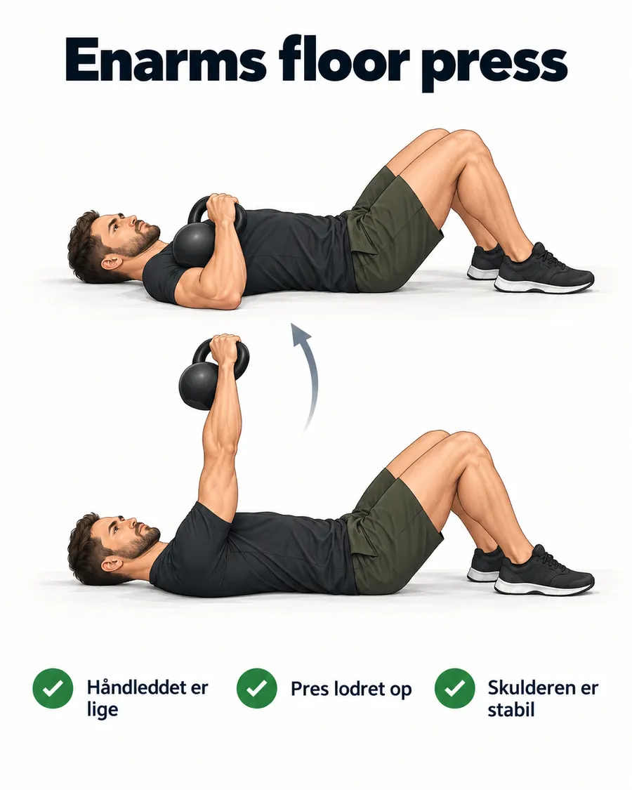
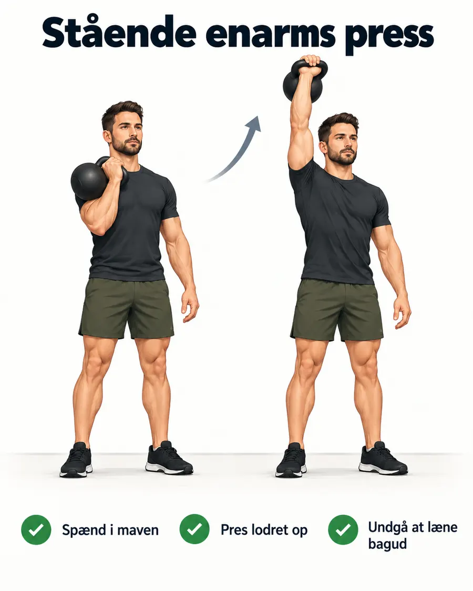
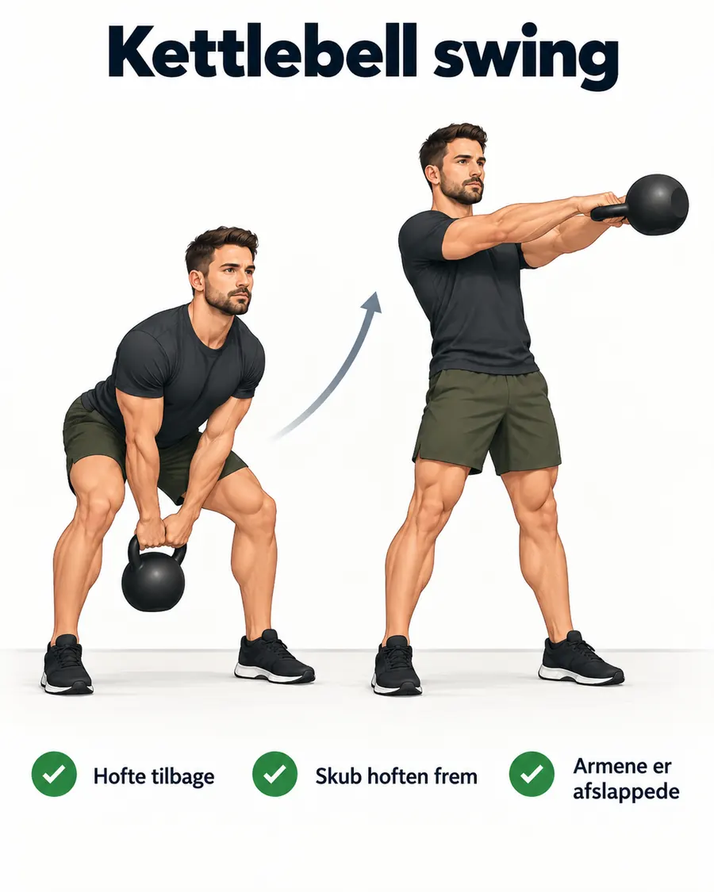
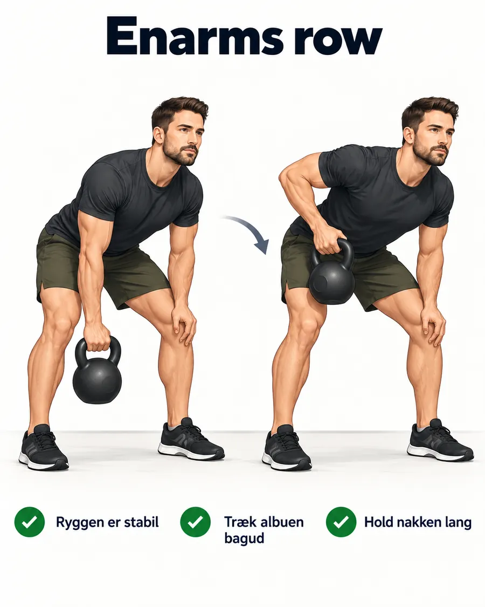
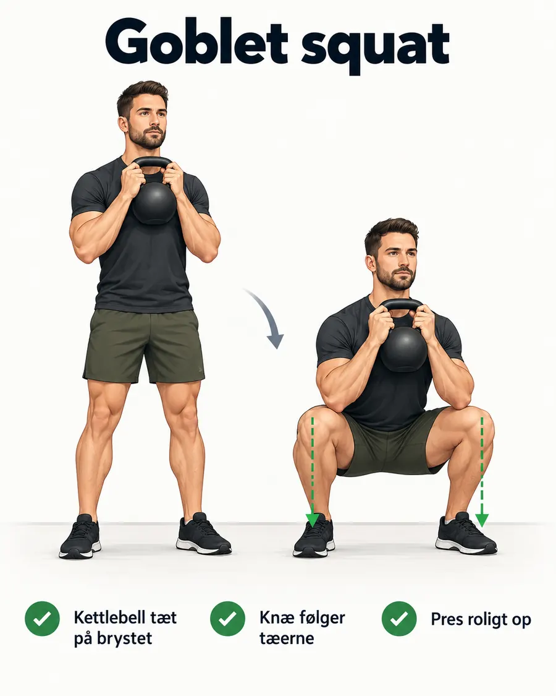
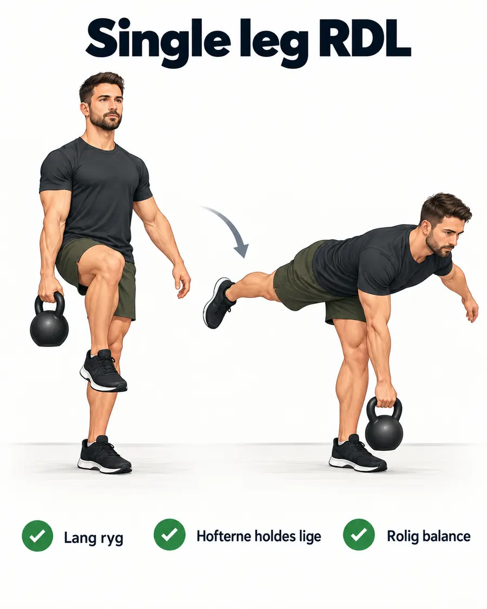
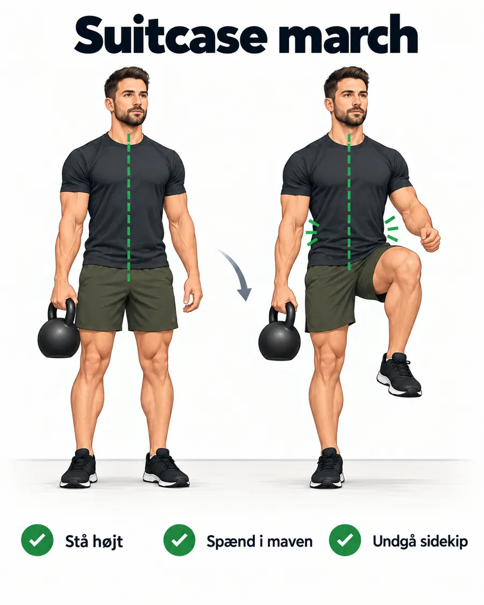

Vælg dagens program
Tre enkle valg. Lunges og split squat er sat på pause, indtil din fysioterapeut har godkendt dem igen.
Din træning
Gemmes på telefonenPå din iPhone
Version 2Når appen ligger på en webadresse, kan den lægges på hjemmeskærmen og åbnes næsten som en almindelig app. Det gør vi som næste trin.
Plan for progression
Version 2- Vi kører disse programmer som fast base nu
- Første almindelige revision efter cirka 6 uger
- Lunges og split squat kommer kun tilbage efter grønt lys fra fysioterapeuten
- Ved revision skifter vi typisk 2 til 3 øvelser, mens basisøvelserne bevares
Kettlebell 18
Til dage med lav energi. RPE 3 til 4. Du skal føle, at du kunne have lavet lidt mere, når du er færdig.
Opvarmning
4 min- 1 min rolig gang på stedet
- 1 min hoftehængsel uden vægt
- 1 min let squat i smertefri dybde eller sæt dig/rejs dig fra stol
- 1 min skuldercirkler og rolig bevægelighed
Hovedblok
10 min5 øvelser. 40 sekunders arbejde og 20 sekunders skift. Kør 2 runder.
1. Kettlebell deadlift

2. Enarms row

3. Enarms floor press

4. Suitcase march

5. Stående enarms press

Afslutning
4 min- 2 min rolig gang og vejrtrækning
- 1 min hofter og baglår
- 1 min bryst og skuldre
Gem dagens træning
HistorikDine valgte vægte gemmes sammen med træningen på denne telefon.
Kettlebell 30
30 minutters helkropstræning. Lunges er midlertidigt taget ud.
Dagens niveau
RPENormal: RPE 5 til 6. Roligt og kontrolleret tempo.
Opvarmning
5 min- 1 min rolig gang på stedet
- 1 min hoftehængsel uden vægt
- 1 min squat i smertefri dybde
- 1 min skuldercirkler
- 1 min let deadlift med 8 kg
Hovedblok
20 min40 sekunders arbejde, 20 sekunders skift. 3 runder.
1. Goblet squat

2. Kettlebell swing

3. Enarms row

4. Stående enarms press

5. Enarms floor press

6. Suitcase march

Afslutning
5 min- 2 min rolig gang og vejrtrækning
- 1 min hofter og baglår
- 1 min bryst og skuldre
- 1 min rolig bevægelighed
Gem dagens træning
HistorikDine valgte vægte gemmes sammen med træningen på denne telefon.
Kettlebell 45
Mere bagkæde, ryg, core og stabilitet. Split squat er midlertidigt taget ud.
Dagens niveau
RPENormal: RPE 5 til 6. Kontrolleret styrketræning uden udmattelse.
Træningssted
ValgSommerhus: Brug 4, 8 og 12 kg. Arbejd med kontrol og god teknik.
Opvarmning
7 min- 1 min gang på stedet
- 1 min hoftehængsel
- 1 min squat i smertefri dybde
- 1 min skuldercirkler
- 1 min let deadlift
- 1 min rolig march
- 1 min let swing eller ekstra bevægelighed
Blok A • Kraft og ben
ca. 14 min40 sekunders arbejde, 20 sekunders skift. 3 runder.
1. Kettlebell deadlift

2. Kettlebell swing

3. Enarms row

4. Goblet squat

Blok B • Stabilitet og core
ca. 14 min5. Stående enarms press

6. Single leg RDL

7. Enarms floor press

8. Suitcase march

Afslutning
10 min- 2 min rolig gang og vejrtrækning
- 2 min skuldermobilitet
- 2 min hofter og baglår
- 2 min bryst og skuldre
- 2 min rolig nedkørsel
Gem dagens træning
HistorikDine valgte vægte gemmes sammen med træningen på denne telefon.